2．方程论
从17世纪延续下来的几乎没有一点中断的一门科学研究是解多项式方程。这个课题在数学中是基本的课题，所以要获得解任意次方程的较好方法，要得到求方程近似根的较好方法，要完成方程的理论———特别是证明每一个n次多项式方程有n个根，对这些问题有兴趣是很自然的。另外，在积分中采用部分分式法就提出了这样的问题：是不是任何实系数多项式都能分解成线性因式的乘积，或分解成实系数的一次因式和二次因式的乘积，以避免使用复数？
我们在第19章（第4节）中已看到，莱布尼茨不相信每一个实系数多项式能分解成实系数的一次因式和二次因式的乘积。欧拉的看法是正确的。他在1742年10月1日给尼古拉·伯努利（1687—1759）的信中断言（但没有证明）：任意次数的实系数多项式是能够这样表示的。尼古拉·伯努利不相信这一结论是正确的，并举了一个例子：他说多项式
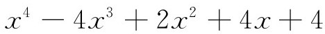
的零点是
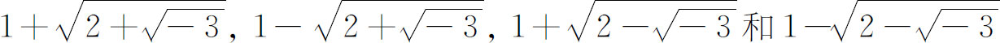
，这是与欧拉的结论相矛盾的。欧拉在1742年12月15日写给哥德巴赫的信中［富斯（Fuss），第1卷第169 171页］指出，复根是以共轭形式成对地出现的，所以x-（a＋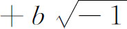
）和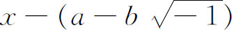
的乘积（其中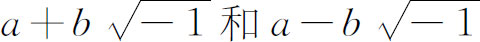
互为共轭）是一个实系数的二次多项式。接着欧拉证明这对于尼古拉·伯努利的例子也是正确的。但是哥德巴赫也拒绝接受这种思想，不认为每一个实系数多项式能分解成实系数因式的乘积，并给出例子x4＋72x-20。后来欧拉给哥德巴赫证明后者做错了，并说明他自己的定理对于直到六次多项式都成立。但是哥德巴赫仍不相信，因为欧拉没有成功地做出他断言的一般性证明。把一个实系数多项式因式分解成实系数的一次和二次因式的问题，关键在于证明每一个这样的多项式至少有一个实根或一个复根。因此这件事的证明（叫做代数基本定理）就成了一个主要的目标。
达朗贝尔和欧拉的证明是不完全的。1772年(1)，拉格朗日在一个又长又详细的论证中“完成”了欧拉的证明。但是拉格朗日像欧拉以及他的同时代人一样，随便地把数的一般性质应用于想象为方程的根上，而没有证明多项式方程的根在最坏的情况下是复数。因为不知道根的性质，所以他的证明实际上是不完全的。
基本定理的第一个实质性证明是高斯在他1799年于黑尔姆施塔特（Helmstädt）写的博士论文中做出的(2)，虽然从现代的标准来看，这个证明依然是不严格的。他批评了达朗贝尔、欧拉和拉格朗日的工作，然后做出了自己的证明。高斯的方法不是去计算一个根，而是去证明它的存在。他指出P（x＋iy）＝0的复根a＋ib相应于平面上的点（a，b），如果
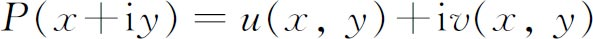
，那么（a，b）必定是曲线u＝0和v＝0的交点。通过对这些曲线作定性的研究，他证明一条曲线上的一段连续弧连接着两个不同区域上的点，而这两个区域是被另一条曲线隔开的。所以曲线u＝0必定与曲线v＝0相交。这个论证是有高度创造性的。但是他依靠了这些曲线的图形，证明它们必然相交，而这些图形是有点复杂的。在同一篇论文中，高斯证明了n次多项式能表示成一次和二次实系数因式的乘积。高斯还做出了这定理的三个别的证明。在第二个证明中(3)，他不用几何的论据。其中他还证明了每两个根之差的乘积（我们遵循詹姆斯·西尔维斯特的说法，把它叫做判别式）能表示成多项式和它的导数的线性组合，所以多项式和它的导数有公共根的充要条件是判别式等于零。但是这第二个证明假定了当多项式在x的两个不同的值之间没有零点时，它在这两个值处不可能改变符号。这件事实的证明超过了当时数学的严密程度。
第三个证明(4)其实使用了我们现在所谓的柯西积分定理（第27章第4节）(5)。第四个证明(6)就其涉及的方法而言，是第一个证明的变种。但是在这个证明中，高斯更自由地使用了复数，他说，这是因为它们现在已属于普通的知识了。值得指出的是，在许多证明中，这条定理都不是在最一般的情形下证明的。高斯的前三个证明和后来柯西、雅可比和阿贝尔的证明都假定了（文字的）系数表示实数，但整个定理却包括复系数的情况。高斯的第四个证明确实容许了多项式的系数是复数。
高斯探讨代数基本定理的方法开创了探讨数学中整个存在性问题的新的途径。古希腊人聪明地认识到，数学研究对象的存在性必须建立在与它们有关的定理之前。他们关于存在的准则就是可构造性。在以后各世纪写得更清楚的正式著作中，存在性都是通过实际获得或显示出问题中的量而建立起来的。例如二次方程的解的存在性，是通过把满足方程的量显示出来而建立起来的。但是在方程的次数高于四次的情况下，这种方法就失去效用了。当然，像高斯那种存在性的证明，对于计算其存在性已建立的对象来说也许是一点用处也没有的。
当最终证明每一个实系数多项式方程至少有一个根的工作正在进行的时候，数学家们还在大力推进用代数方法求解四次以上的方程。莱布尼茨和他的朋友奇恩豪森是第一批做出认真努力的人。莱布尼茨(7)重新考虑了不可约的三次方程，并且深信解这种类型的方程不可能不用到复数。接着，他着手求五次方程的解，但是没有成功。奇恩豪森(8)认为他已经解决了这个问题，他借助于变换y＝P（x），把给定的方程变换成新的方程，这里P（x）是一个适当的四次多项式。这个变换消去了方程中除x5和常数项以外的所有的项。但是莱布尼茨证明了要求出P（x）的系数，必须解一个次数高于五次的方程，所以这个方法是没有用的。
有一段时期，解n次方程的问题集中在解二项方程
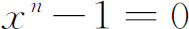
的特殊情形。科茨和棣莫弗通过用复数证明，解这个问题相当于把圆周分成n个等分。为了用开根求解（三角解未必是代数解），只要考虑n是奇素数的情况就够了，因为如果n＝pm，其中p是一个素数，那就可以考虑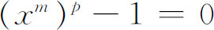
。如果这个方程可以对xm求解，那么xm-A＝0就能解出来，其中A是前面已解出的方程的任何一个根。范德蒙德（Alexandre-Théophile Vandermonde，1735—1796）在1771年的一篇论文中(9)断言，每一个形为xn-1＝0的方程是可以用开根解出来的，其中n是素数。但是范德蒙德仅验证了对于11以下的素数n，这种做法是行得通的。关于二项方程的有决定意义的工作是高斯做出来的（第31章第2节）。解四次以上高次方程的主要精力集中在解一般性的方程上，而且在朝着这一目标前进的过程中，一些关于对称函数的辅助性工作被证明是重要的。代数式
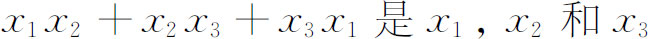
的对称函数，因为在整个式子里若用xj代替任何xi而用xi代替xj，则整个式子保持不变。当17世纪的代数学家注意到，而且牛顿证明了多项式根的乘积的各种和可以用方程的系数表示出来的时候，研究对称函数的兴趣就产生了。例如，当n＝3时，把方程的根两两相乘，它们的和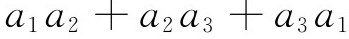
是一个初等对称函数，如果方程写成
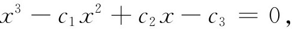
那么上面的和就等于c2。范德蒙德在1771年的文章中做出的进展就是证明了根的任何对称函数都能用方程的系数表示出来。
经过很多人，其中包括欧拉的努力(10)之后，18世纪在用开根解方程的问题方面，杰出的工作是范德蒙德在1771年的论文中和拉格朗日在他的长篇论文《关于方程的代数解法的思考》（Réflexions sur la résolution algébrique des équations）(11)中做出的。范德蒙德的各种想法都是类似的，但不是那样开阔、那样清晰。所以我们将介绍拉格朗日的做法。拉格朗日给自己提出了一个任务：分析解三次方程和四次方程的各种方法，看看为什么这些方法能把方程解出来，看看这些方法对于解更高次的方程能够提供什么线索。
对于三次方程
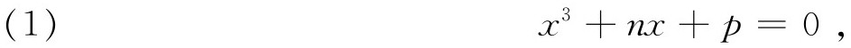
拉格朗日注意到如果引进变换（第13章第4节）
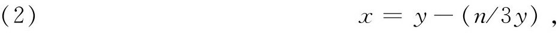
就得到辅助方程
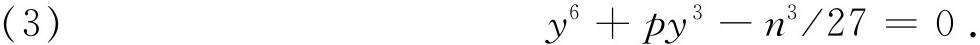
这个方程也叫简化方程，因为它是y3的二次方程，若设r＝y3，方程就变为
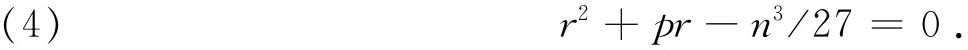
现在我们看到，我们能够借助原方程的系数算出这个方程的根r1和r2，但是从r回到y必须引进立方根或解方程
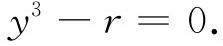
因此，如果令ω是单位立方根
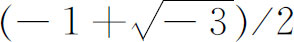
，那么y的值就是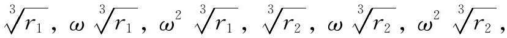
因而方程（1）的各个解就是
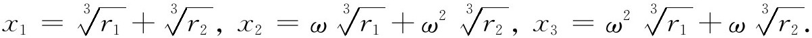
这样原方程的解就是通过简化方程的解得到的。
拉格朗日证明他的前辈们所用的各种不同方法都相当于上面的方法。然后他指出，我们应该把我们的注意力不是集中在x是y值的函数上，而是集中在y是x的函数上，因为可以让我们全部解出来的正是简化方程，这个奥秘一定是隐藏在把简化方程的解用原先提出的方程的解表示出来这一联系之中。
拉格朗日注意到当x1，x2和x3按特定的顺序取出时，每一个y值都能写成（因为1＋ω＋ω2＝0）形式
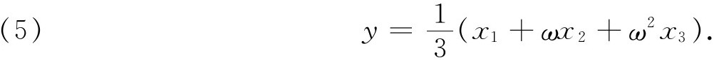
检查这个式子能使我们发现简化方程（未知量是y）的两条性质。第一条性质是：在y的表达式中，根x1，x2和x3不是x1，x2和x3的一个固定的选择，因而这个表达式可以说是意义含糊的。所以三个x值中的任一个可以是x1，其他两个中的任一个可以是x2等。但是这些x有3！种置换，所以有6个y值，因而y应满足一个六次方程。因此简化方程的次数是由原方程的根的置换的个数决定的。
第二条性质是：关系式（5）还说明为什么能把六次的简化方程化简为二次方程。因为在这六种置换中，三种（包括恒等置换）来自于交换所有的xi，另三种来自于只交换两个而固定一个。但是这样一来，由于ω值的缘故，所得到的y的6个值，就有关系
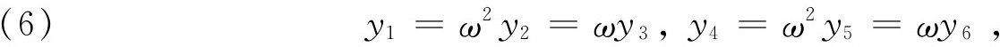
并且取立方，还有
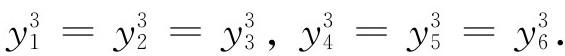
这个结论的另一种说法是，函数
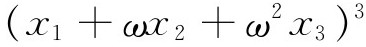
在x1，x2和x3的所有六种置换下只能取2个值，这正说明为什么y所满足的方程一定是y3的二次方程。另外，y所满足的六次方程的系数是原三次方程系数的有理函数。
对于x的一般四次方程，拉格朗日考虑
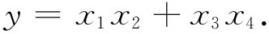
这一四个根的函数在四个根的所有24种置换下只取三个不同的值。因此应当有y所满足的一个三次方程，而且这个方程的系数应该是原方程系数的有理函数。这些叙述确实适用于四次方程。
然后，拉格朗日着手处理一般的n次方程
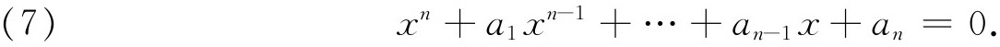
这个方程的系数假定是无关的，就是说，ai之间必须没有任何关系成立。于是所有根必定也是无关的，因为如果根之间有一个关系式成立，就可以证明它对于系数也是对的（因为实际上系数是根的对称函数）。所以一般方程的n个根必须考虑为是无关的变量，它们的每一个函数都是一些无关变量的函数。
为了理解拉格朗日解决问题的计划，让我们首先来看
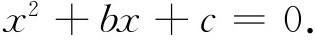
我们知道它的根的两个函数，即x1＋x2和x1x2。它们是对称函数，就是说，两个根互相交换时，函数保持不变。一个函数在它的变量进行置换时不变，我们就说这个函数容许置换。例如函数x1＋x2容许x1和x2的置换，但函数x1-x2却不容许。
接着拉格朗日证明了两个重要的命题。如果一般的n次方程的根的一个函数
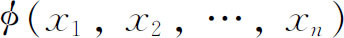
容许另一个函数ψ（x1，x2，…，xn）所容许的xi的所有的置换（可能还容许ψ所不容许的一些置换），那么函数ø可以用ψ和一般方程（7）的系数有理地表示出来。例如二次方程根的函数x1容许函数x1-x2所容许的所有置换（只有一个，即恒等置换），于是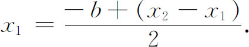
拉格朗日关于这个命题的证明还说明了如何把ø表达成ψ的有理函数。
拉格朗日的第二个命题叙述如下：如果一般方程的根的一个函数ø（x1，x2，…，xn）不容许函数ψ（x1，x2，…，xn）所容许的所有置换，但是在ψ所容许的置换下取r个不同的值，那么ø是一个r次方程的根，这个方程的系数是ψ和给定的一般n次方程的系数的有理函数。这个r次方程可以构造出来。比如x1-x2不容许x1＋x2所容许的所有置换，但在这些置换下取两个值x1-x2和x2-x1。于是x1-x2是一个二次方程的根，这个方程的系数是x1＋x2以及b和c的有理函数。事实上，因为b2-4ac＝（x1-x2）2，所以x1-x2是方程
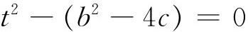
的根。用这个根的值，即
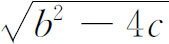
，我们可以通过前面关于x1的方程来求得x1。类似地考虑三次方程
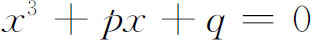
，式子（即ø）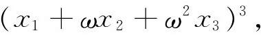
其中
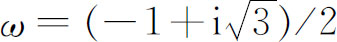
，在根的六种可能的置换下取两个值，但是x1＋x2＋x3 （即ψ）容许所有这六种置换。如果那两个值记为A和B，那么可以证明A和B是一个二次方程的根，这个方程的系数是p和q的有理函数（因为x1＋x2＋x3＝0）。如果我们解出这个二次方程，求得根是A和B，那么从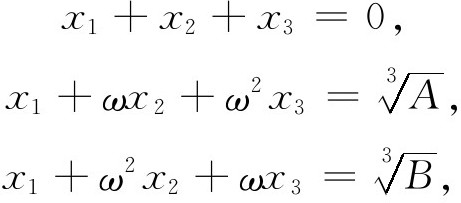
我们就能求得x1，x2和x3。对于四次方程，拉格朗日从函数
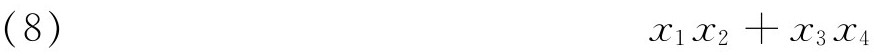
出发，这个函数在根的24种可能的置换下取3个不同的值，但是x1＋x2＋x3＋x4容许所有的这24种置换。因此（8）是一个三次方程的根，这个方程的系数是原方程系数的有理函数。而且事实上，一般的四次方程的辅助方程（或简化方程）就是三次的。
对于一般系数的n次方程，拉格朗日的想法是从根的对称函数ø0出发，这个函数容许根的所有的n！个置换。他指出，这样一个函数可以取x1＋x2＋…＋xn。然后他选择一个函数ø1，它只容许某些置换。假定ø1在n！个置换下取r个不同的值，那么ø1就是一个r次方程的根，这个方程的系数是ø0和给定的一般方程的系数的有理函数。这个r次方程可以构造出来。再进一步，如果ø0取为根和系数的一个对称函数，那么由给定的一般方程的系数，这个r次方程的系数就完全知道了。如果这个r次方程可以用代数方法解出来，那么依据原方程的系数，ø1也就求得了。然后再选择一个函数ø2，使它只容许ø1所容许的根的置换的一部分，ø2在ø1所容许的置换下假定取s个不同的值。那么ø2就将是一个s次方程的根，这方程的系数是ø1和给定的一般方程系数的有理函数。如果那个r次方程（ø1是它的一个根）能够解出来，那么这个s次方程的系数也就知道了。如果这个s次方程可以用代数方法解出来，那么根据原方程的系数，ø2也就知道了。
如此继续下去，选择ø3，ø4，…直到最后一个函数，选择为x1。于是，如果这些r次、s次……方程都能用代数方法解出来，那么根据给定的一般方程的系数，x1也就知道了。其他的根x2，x3，…，xn，由同样的过程可以得到。这些r次、s次……的方程今天叫做预解方程(12)。
拉格朗日的方法对于求解一般的二次、三次和四次方程都卓有成效。他试图用这种方法去解五次方程，但发现工作是如此艰难，以至不得不放弃。对于三次方程他只要解一个二次方程，但对于五次方程，他就必须解一个六次方程。拉格朗日徒劳地寻求一个预解函数（在他对这个术语的解释下），使它能满足一个次数低于五次的方程。但是他的工作没有给出选择øi的任何准则，使这些øi满足一个代数可解的方程。另外，他的方法只能用于一般的方程，因为他的两个基本命题都假定根是无关的。
拉格朗日被迫得出结论说，用代数运算解一般的高次方程（n＞4）看来是不可能的（对于特殊的高次方程，他贡献很少）。他判断说，或者是这个问题超越了人的智力范围，或者是根的表达式的性质必定不同于当时所知道的一切。高斯在他的1801年的《专题论文》（Disquisitiones）中，也声称这个问题也许是不能解决的。
拉格朗日的方法尽管很少成功，但它确实给出了洞察n≤4时成功而n＞4时失败的道理；这种洞察力为阿贝尔和伽罗瓦（Evariste Galois）所利用（第31章）。另外，拉格朗日的思想是必须考虑一个有理函数当它的变量发生置换时所取的值的个数，这个思想引导到置换或代换群的理论。其实，他已实际上得到了这样的定理：一个群的子群的阶（元素的个数）必定是该群的阶的因子。拉格朗日的著作是一切关于群论的著作的先导，上述定理在其中所取的形式是ø1所取的值的个数r是n！的因子。
受拉格朗日的影响，鲁菲尼（Paolo Ruffini，1765—1822）在1799到1813年之间作过好几种尝试，要证明四次以上的高次方程应是不能用代数方法解出的。（鲁菲尼是一个数学家、医生、政治家，是拉格朗日的一个热忱的弟子。）在他的《方程的一般理论》（Teoria generale delle equazioni）(13)中，鲁菲尼用拉格朗日所创的方法成功地证明了不存在一个预解函数（在拉格朗日的意义下），能满足一个次数低于5次的方程。事实上，他证明了当n＞4时，不存在一个n元有理函数，在n个元素发生置换时取3个或4个值。后来，在他撰写的《用一般的代数方法解方程的一些想法》（Riflessioni intorno alla soluzione delle equazioni algebraiche generali）(14)中，他大胆地着手证明，用代数方法解n＞4的一般方程是办不到的。虽然一开始鲁菲尼就相信这个结论是正确的，但他的努力没有达到目标。鲁菲尼用了（但没有证明）这样一条辅助定理（现在叫做阿贝尔定理）：如果一个方程能用开根解出来，那么根的表达式就能写成这样一种形式，其中的根式是已知方程的根和单位根的有理系数的有理函数。